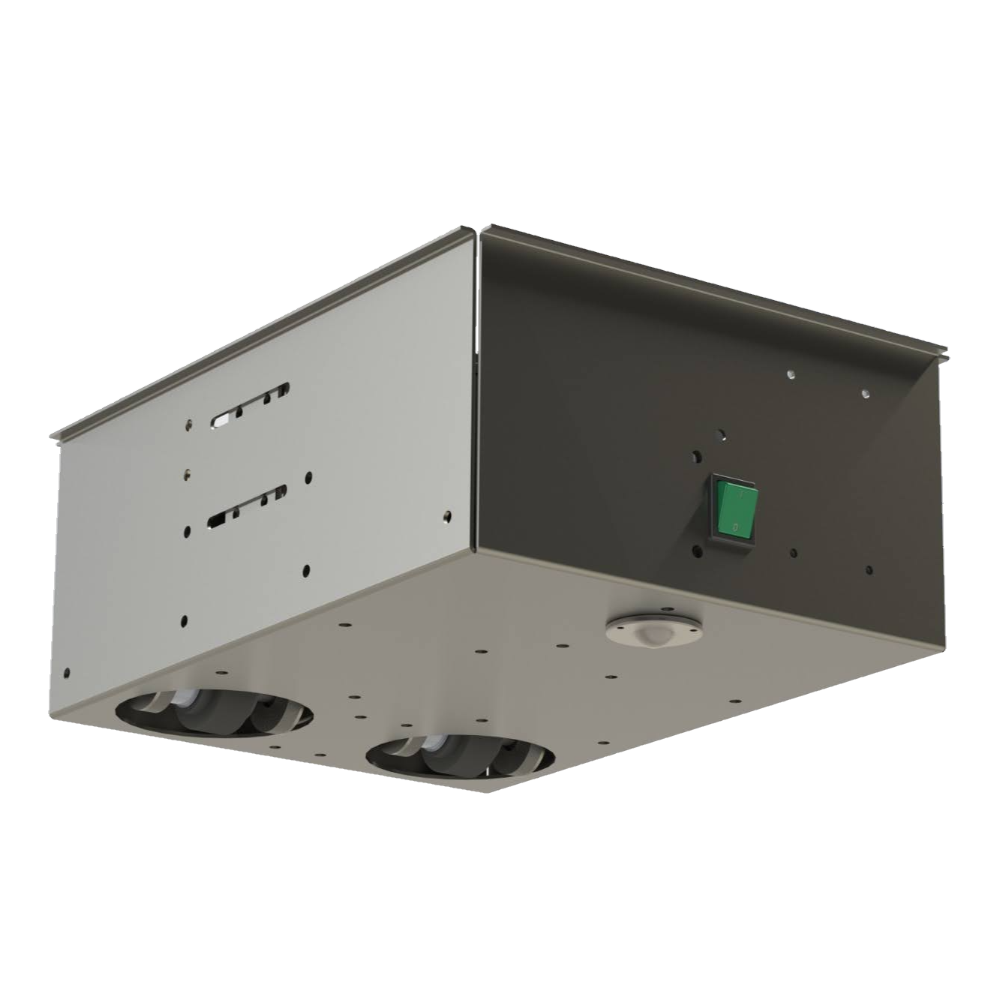

2x2 Stuurrobot
Een innovatief embedded systemen project in robotica en mechatronica, met draadloze besturing en geavanceerde besturingslogica.


Projectbeschrijving
De 2x2 Stuurrobot is een conceptueel mobiel robotplatform, ontwikkeld voor ultieme wendbaarheid. Elke van de twee wielen heeft een eigen stuur- én aandrijfmotor, waardoor de robot traditioneel kan rijden, crab steering kan uitvoeren, op de plek kan draaien (zero-radius turn) en elke willekeurige rijhoek daartussen kan aannemen. Dit maakt het een uitstekend voorbeeld van een embedded systemen en mechatronica project.
De mechanische structuur is opgebouwd uit plaatwerkcomponenten, gemodelleerd in SolidWorks en geproduceerd met CNC-techniek. Ik heb alle technische tekeningen gemaakt en het productieproces begeleid. Voor de elektronica zijn dubbele motordrivers en accupacks toegepast, waarbij de capaciteit is berekend voor optimale gebruiksduur. Veiligheidslogica zorgt voor automatische uitschakeling bij signaalverlies.
De draadloze besturing is gerealiseerd via Bluetooth, gekoppeld aan een zelfontwikkelde Android-app. Hiermee is de mobile robot intuïtief te bedienen. Wielhoeken en snelheden worden gecoördineerd via wiskundige transformaties, zodat de robot altijd in de juiste richting beweegt. Dit project combineert geavanceerde robotica, besturingstechniek, mobile HMI en de praktische integratie van mechanische en elektrische systemen.